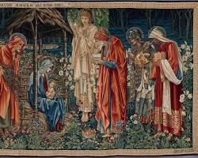

Starts 4 Sundays before Christmas Day.
This symbolises the date that the nativity started, the day the Angel Gabrial came to Mary.
This is the night before Christmas Day, and it is commonly celebrated with a festive meal and a gift exchange.

This is the day on which Christians celebrate the birth of Jesus Christ. It is a time for family gatherings, church services, and gift-giving.

This is the day after Christmas Day, and it is traditionally a day for gift-giving to servants and the poor.

This is also known as Twelfth Night and is celebrated on January 6th. It commemorates the visit of the Magi to the newborn Jesus.
